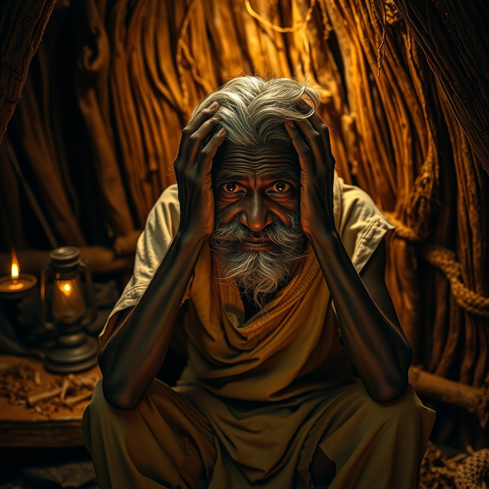
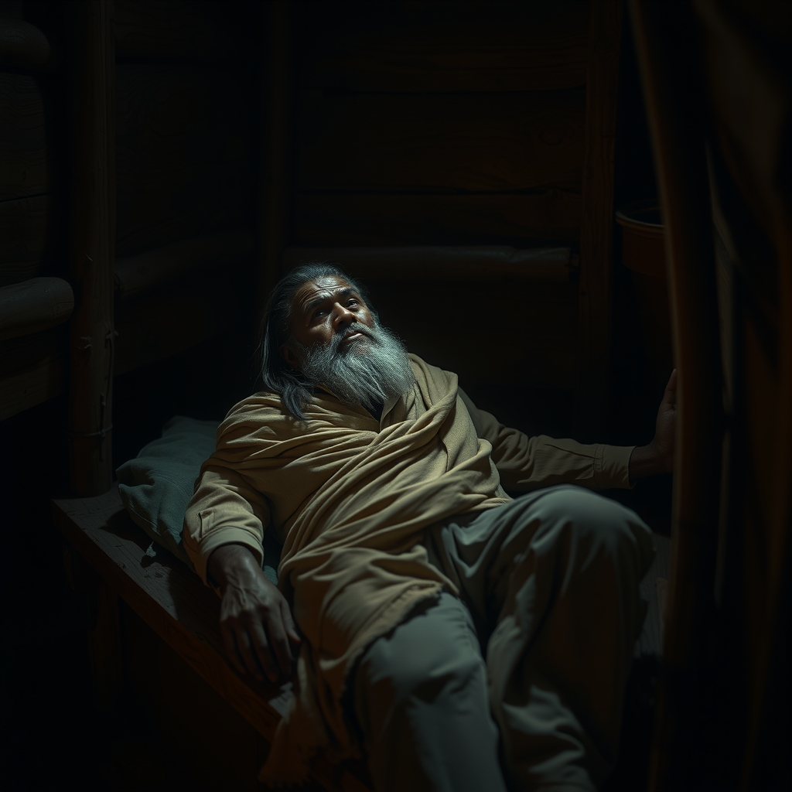
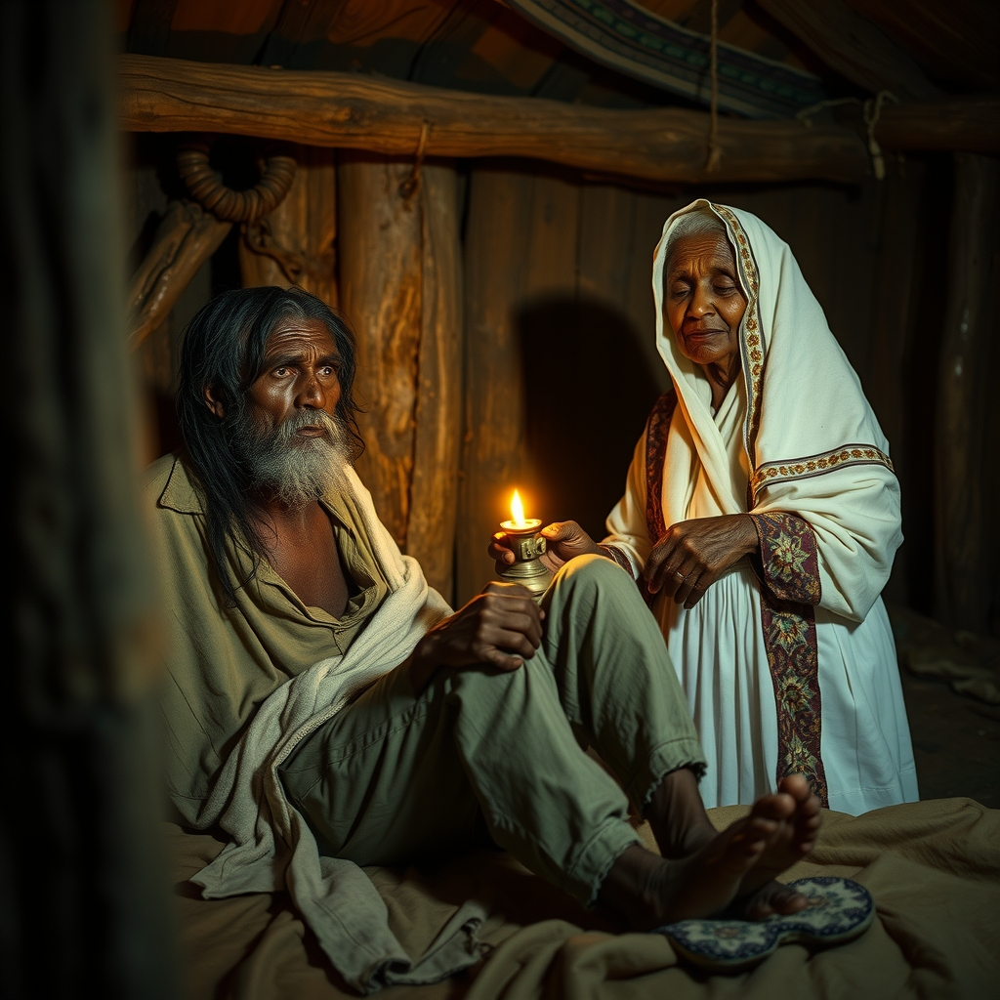

The drunk of Gulele
18.4-26.9s

ተበጀ፣ ሰካራሙ ተበጀ፣ ዶሮ ነጋዴው ተበጀ ነው ብለው ይነግሯቸዋል።
Tebeje, they will tell you. Tebeje the drunk. Tebeje the chicken trader.
Starts and ends on these words? ☐ yes ☐ cut early ☐ cut late
The drunkard of Gulele's house
210.8-221.3s

‹ዶሮ ነጋዴው የትኛው ነው?› ሲባል ‹ያ የጉለሌው ሰካራም› ሊባል ነው። አወይ! እኔ ተበጀ፤ ተበላሽቻለሁ አለና ደነገጠ።
'Which chicken trader?' 'That drunkard of Gulele.' 'Oh! Me, Tebeje, I am ruined,' he said, shaken.
Starts and ends on these words? ☐ yes ☐ cut early ☐ cut late
Gulele is asleep
376.9-383.4s

ጉለሌ ተኝቷልና ከዚሁ ከባሕር ዛፍ ሥር ቁጭ ብዬ ብጠጣ የሚታዘበኝ የለም አለና አሰበ።
'Gulele is asleep. If I sit under this eucalyptus and drink, no one will see me,' he thought.
Starts and ends on these words? ☐ yes ☐ cut early ☐ cut late
It was a pig
662.5-669.4s
‹ሴትዮዋ ድናለች?› ብሎ በርኅራሄ ድምፅ ጠየቃቸው። አንዱ ቀረበና ‹አሳማ ነው ያወጣኸው› አለው።
'Is the woman saved?' he asked tenderly. One came closer: 'It's a pig you pulled out.'
Starts and ends on these words? ☐ yes ☐ cut early ☐ cut late
Just today, just a little
1082.8-1091.1s

ሹልክ ብዬ ዛሬ ብቻ፣ ጥቂት ብቻ፣ አንድ ጊዜ ብቻ፣ እኔ ብቻ፣ ብጠጣ ምን ይጐዳል
'If I slip out, just today, just a little, just once, just me... what harm could it do?'
Starts and ends on these words? ☐ yes ☐ cut early ☐ cut late
Carried like a leader
1190.7-1196.4s

እንደተወደደ መሪ በጫንቃቸው ላይ ተሸክመው እየተቀባበሉት በእልልታ ጮሁ።
Like a beloved leader they carried him on their shoulders, passing him along, cheering.
Starts and ends on these words? ☐ yes ☐ cut early ☐ cut late
The railway
1338.2-1351.2s

ከኋላው በኩል ትልቅ ኀይል መታው። ከፊቱ በኩል የቀበሮ ጉድጓድ ተቀበለው። እግሩ እንደ ብርጭቆ ነከተ።
A great force struck him from behind. A fox hole caught him in front. His leg shattered like glass.
Starts and ends on these words? ☐ yes ☐ cut early ☐ cut late
How many legs do I have?
1549.0-1557.5s

‹ስንት እግር ነው ያለኝ?› ብሎ ጠየቃቸው። ወይዘሮ ጥሩነሽም ‹ዱሮ ስንት እግር ነበረዎ ጌታ?› ብለው ጠየቁት።
'How many legs do I have?' he asked. Weyzero Tiruneshe replied, 'How many did you have before, sir?'
Starts and ends on these words? ☐ yes ☐ cut early ☐ cut late
Nights of such vows pass
1593.7-1608.4s

ወደ ሰማይ እያየ ‹መጠጥ ማለት ለእኔ ሞት ማለት ነው› አለ። ጊዜውም ሌሊት ነበር። ‹እንደዚህ የማሉበት ሌሊት ያልፋል› ብለው ወይዘሮ ጥሩነሽ መለሱለት።
Looking at the sky he said, 'For me, drink means death.' It was night. 'Nights of such vows pass,' Weyzero Tiruneshe replied.
Starts and ends on these words? ☐ yes ☐ cut early ☐ cut late